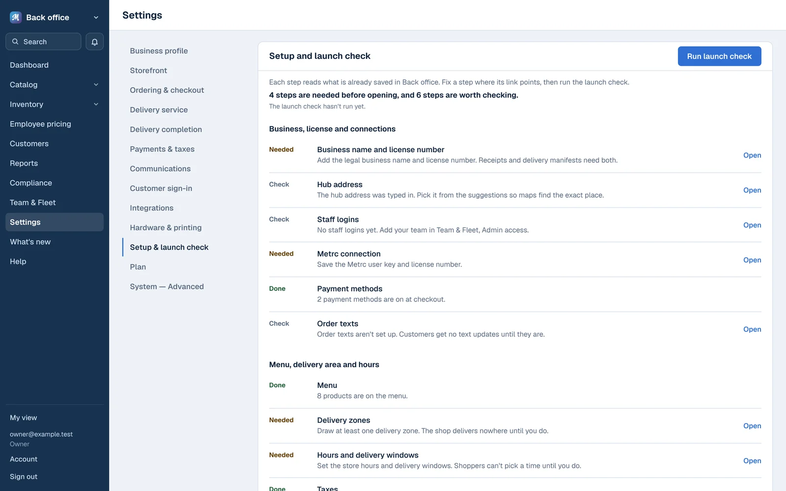
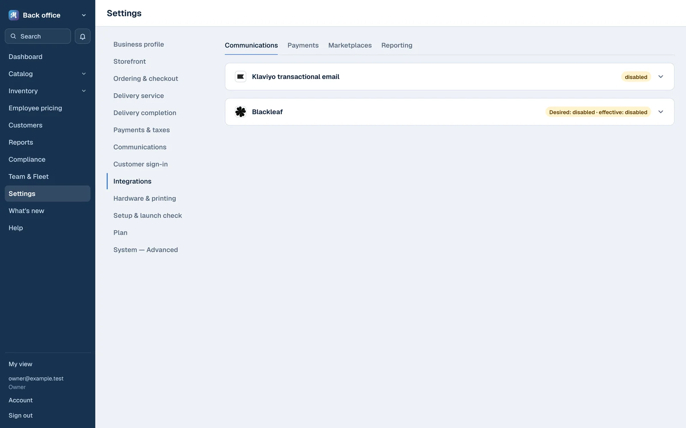
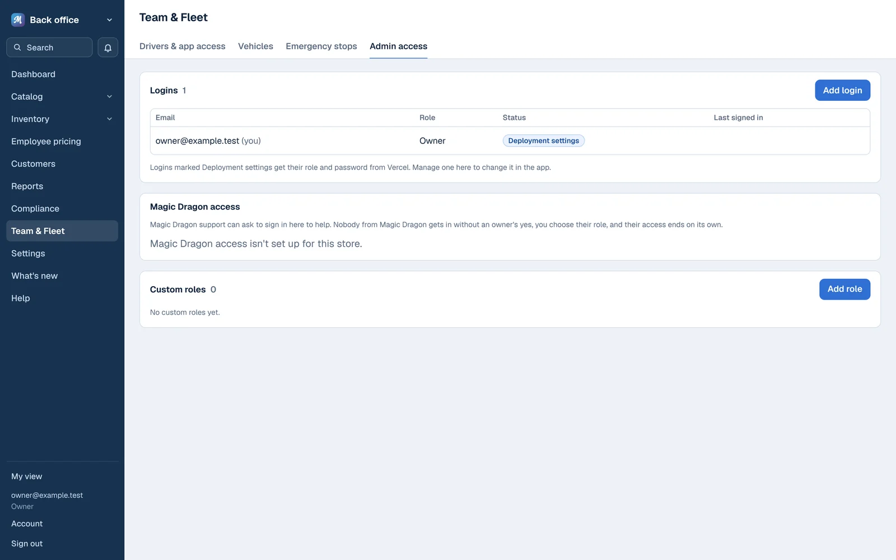

Magic Dragon on the web: a delivery marketplace and the back office behind it
Magic Dragon is a delivery platform for licensed stores. Customers order on the web storefront, dispatchers run the night on a live board, drivers deliver with a phone app, and each store runs itself from the back office. I designed all of it from scratch, and it's in production today.
- Type
- Real product, in production
- Platform
- Web storefront, dispatch board and back office, plus an Android driver app
- My role
- Founder and design lead: research, flows, UI, copy and the design system
- People
- Customers, dispatchers, drivers, store owners and managers

The problem
Every order passes through people who never see each other's screens, under rules the state sets.
- Customers want an honest time and total. They also have to prove their age, stay under a daily purchase limit and show ID at the door.
- Dispatchers match a night of orders to a few drivers in real time, and every change has to reach the driver.
- Store owners have a long list to get right before the first order: license, menu, delivery zones, hours, payments, texts and staff logins.
- The platform is built for more than one store, so each store's customers, sales and settings stay its own.
Who it's for
Customer
Orders from a phone, usually for tonight. Wants a time, a total and no surprises at the door.
Dispatcher
Runs the delivery night from one screen: assigns orders, reorders stops and answers "where's my order?"
Driver
Carries several orders at once. Checks ID, collects payment and gets a signature at every door.
Store owner or manager
Sets up the store, manages staff and drivers, and keeps the business compliant.
The customer's journey
Browse, fill a bag, give an address, check out, track. The rules ride along without getting in the way.
Browse first, address when it matters
Anyone can browse and fill a bag without an address. The first time they add something, the address form opens with the item already in the bag and a close button that never blocks them. The top bar keeps offering an arrival time in exchange for the address. Each store picks this behavior in the back office: don't ask, prompt, or require an address before adding.


Product details without losing your place
A product opens over the menu instead of on a new page, so closing it puts you back where you were. It answers how much, how strong and how many are left, and the price sits on the button. The quick view still gets its own address, so a link to a product works.

The limit is a meter, not an error
Massachusetts caps how much one person can buy in a day. The bag shows how much of the limit this order uses, so nobody meets the rule as an error at checkout.

Sign in with a text code
No passwords for customers. They type a phone number and get a one-time code, and the texting consent sits right under the button in plain words.

The store's journey
An order lands on the dispatch board the moment it's placed. From there it's the store's job to get it to the door.
One board for the whole night
Unassigned orders on the left, one lane per driver. Drag a card into a lane to assign it, drag within a lane to reorder the stops, and every card shows its arrival time. Changes show up on every open board and on the driver's phone, so two dispatchers can work the same night.

Everything about an order, one click from the board
The order opens over the board. Calling the customer, the address, the items and the total come first. Payment, arrival time and messages, timing, the driver's manifest and history fold away until needed. Rare actions live in a More actions menu, and Cancel order sits apart from everything else.

A wallboard for the room
A read-only screen for the store's TV, showing only the counts that need someone to act: unassigned, on hold, past the promised time, payment pending. Customer and employee details are left off on purpose, because anyone in the room can see it.

The back office
Each store runs itself from the back office: settings, staff, drivers, reports and compliance. Most of my work here was making a long list of settings feel short.
A launch check instead of a manual
A new store sees every step it needs before opening, in plain words, each with a link to the screen that fixes it. Needed, Check and Done are read from what's already saved, so the list is never out of date.

Rules explained where you set them
Settings are grouped by job, like Ordering & checkout or Delivery service. Each choice says what customers will experience, and rules the state requires are labeled as required instead of being tucked away.

Integrations in four tabs
Texting, email, payments, marketplaces and reporting tools used to share one long page. I split them into Communications, Payments, Marketplaces and Reporting, with one folding row per provider that shows its status at a glance.

Access the owner controls
Owners add logins and custom roles. If Magic Dragon support needs to help, they have to ask: nobody gets in without the owner's yes, the owner picks their role, and the access ends on its own. Magic Dragon's own staff console, where stores are set up and billed, never shows a store's sales or customers.

How I work
- Mockups before code. Any substantial change starts as clickable mockups I review at real screen sizes before it's built.
- A written design system. One guide for the storefront and one for the internal tools: white title bars, secondary actions in ⋯ menus, labels above outlined fields, 8 px corners, and no decoration that doesn't carry information.
- AI in the workflow. I use AI agents to run audits, draft mockups and build approved designs into the real app. The decisions, rules and copy stay mine.
- Audits that turn into small fixes. Regular passes over the storefront, sign-up and login, and inspection readiness end as short lists of changes.
- Small releases. Changes ship several times a day, so a fix for something a dispatcher hit tonight can be live tomorrow.
What's next
Next I'd measure how many first orders start without an address and still finish, and how long a new store takes to clear the launch check.
The engineering side of the storefront and the dispatch board is on the Development tab. The iPhone app has its own case study.
Screens come from a test copy of the live app with sample products, drivers and orders. Names, addresses and phone numbers are made up.